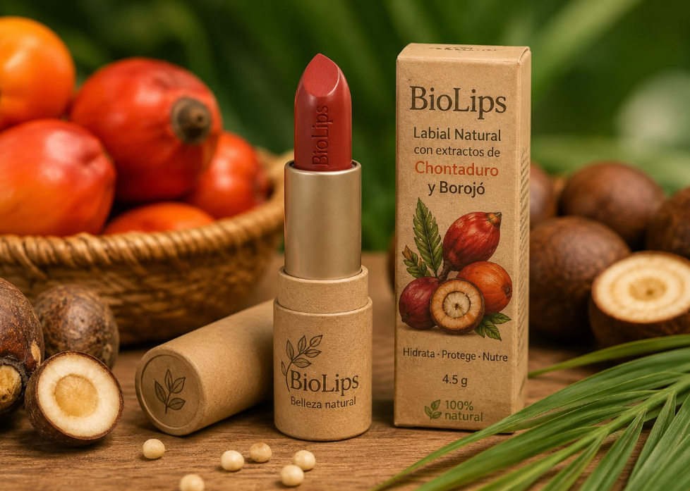
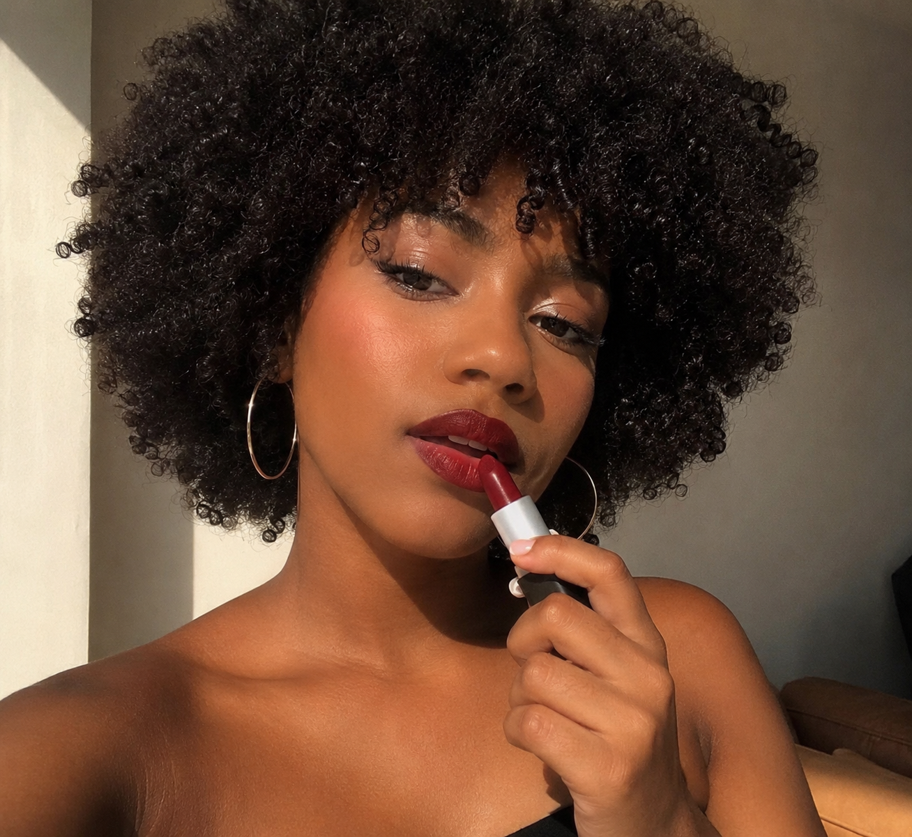
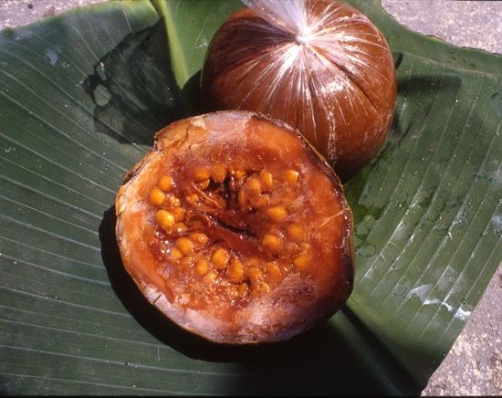
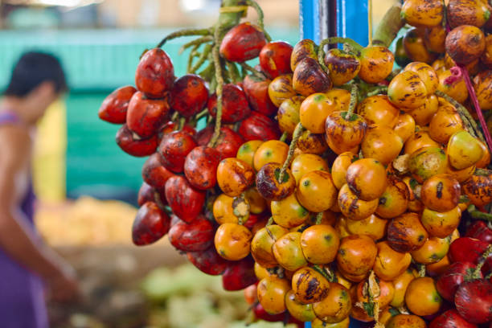
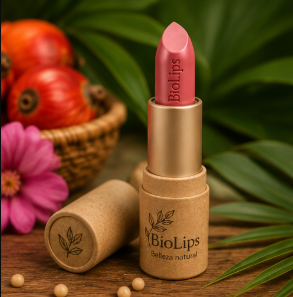
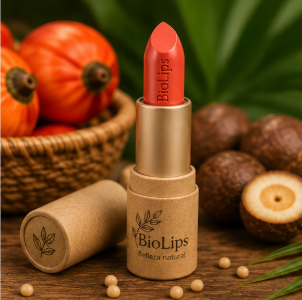
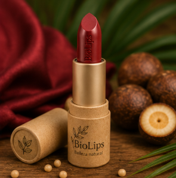
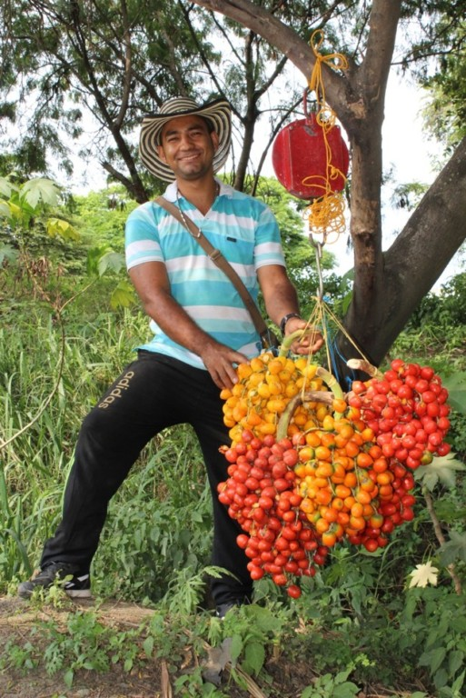

BIOLIPSBelleza natural inspirada en el corazón del Pacífico colombiano"Nutre tus labios con el poder del borojó y el chontaduro."  |
Nuestra Historia
En BioLips creemos que la belleza también puede cuidar el planeta. Nacimos en Buenaventura, Valle del Cauca, con el propósito de transformar dos frutos emblemáticos del Pacífico colombiano, el borojó y el chontaduro, en un labial natural que hidrata, protege y embellece los labios.
|
 |
¿Por qué elegir BioLips? |
|
Ingredientes Naturales | |
|
 Borojó• Rico en antioxidantes. |
 Chontaduro• Contiene vitaminas A y E. |
Nuestra Colección | ||
|
 Rosa PacíficoColor rosa natural. |
 Coral TropicalColor coral brillante. |
 Vino NaturalColor intenso. |
Lo que dicen nuestros clientes⭐⭐⭐⭐⭐ ⭐⭐⭐⭐⭐ ⭐⭐⭐⭐⭐ |
Nuestro Compromiso
En BioLips apoyamos la economía del Pacífico colombiano comprando nuestros ingredientes a agricultores locales.
|
 |
Contáctanos
Buenaventura – Valle del Cauca |
BioLips© 2026 Todos los derechos reservados. |